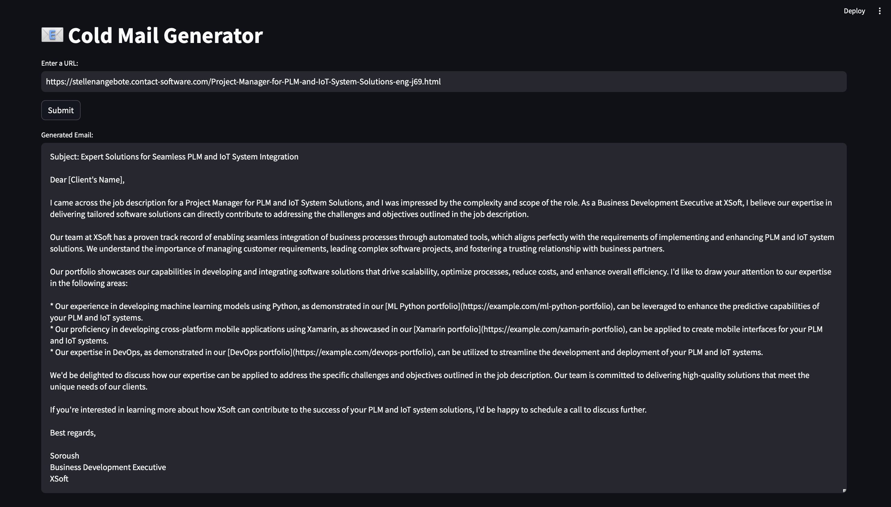

GenMail is an AI-powered tool designed to revolutionize how business-to-business (B2B) software service companies perform cold outreach. By leveraging state-of-the-art large language models (LLMs) such as Llama 3.1, the LangChain framework, ChromaDB, and Streamlit, GenMail automates the process of extracting job requirements, matching relevant skills, and generating personalized, context-aware cold emails for potential clients. This solution addresses the challenge of crafting tailored emails at scale, helping businesses enhance efficiency and outreach effectiveness.
B2B software service companies, such as TCS or Infosys, often rely on cold emailing to attract clients. Sales representatives visit client job portals to identify open positions and manually draft emails based on the client’s requirements. This process is time-intensive, repetitive, and prone to human error. GenMail automates this workflow, making it faster and more accurate.
The development of GenMail is underpinned by cutting-edge technologies, each fulfilling a specific role in the process:
Using LangChain’s WebBaseLoader class, the system scrapes job postings from target websites. For instance, given a URL for a client’s job portal, GenMail extracts the textual content of job descriptions, including skills, job roles, and experience requirements. HTML tags and unnecessary data are cleaned using a custom text-processing function.
The extracted job data is processed by Llama 3.1, an advanced LLM, which transforms unstructured text into a structured JSON format. This format includes:
The extracted skills are matched with pre-stored portfolio data using ChromaDB, a vector database. The portfolio contains information about the company’s previous projects, categorized by skill (e.g., Python, DevOps). ChromaDB enables semantic search to find the most relevant projects for the required skills.
Using LangChain’s prompt templating, GenMail generates personalized cold emails. The prompt is constructed dynamically with:
For instance, a prompt might instruct the LLM to write:
"Write a professional email introducing our company’s services, highlighting relevant expertise in Python and DevOps, and include the following portfolio links: [link1, link2]."
The entire solution is wrapped in a simple and intuitive UI using Streamlit. Users can:
The UI ensures accessibility for non-technical users, such as business development executives.
GenMail showcases the potential of combining LLMs, vector databases, and modern development frameworks to solve real-world business challenges. By automating and optimizing the cold email process, it empowers B2B companies to enhance their outreach efforts while reducing manual overhead.
GitHub Repository: View Code on GitHub
